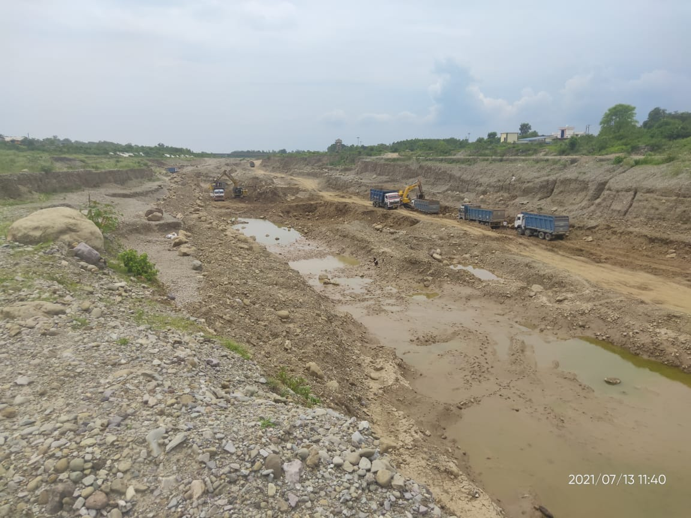
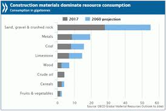
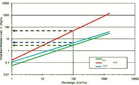

'How A Man Exposed Illegal Mining And Construction In The State'
 Uttarakhand, the quaint hilly state is popular for its scenery. But for quite some time, the state has been plagued with illegal mining which now threatens to sabotage all of this. However, some of the well-meaning individuals are actually working to restore the valley to its true glory. One of them is Bhuwan Singh, an interior designer by profession. However, he claims that his efforts are rewarded by issuing of threats against him and even attacks targeted to physically harm him or tarnish his image. Bhuwan hails from Betalghat block in Nainital district. It is to be noted that Betalghat area is a hotbed for such activities of illegal mining. It is believed that these activities in the area have been going on for the last two-three years now. Singh said, "The government designates specific part of the land or 'patta' for mining. However, those carrying out these activities often deviate from the area allocated to them and start mining outside of that patta as well. They then steal the sand and rocks from the Kosi river."
The following demographs demonstrates the Illegal River Mining:
 
'How Bhuvan dealt with the Problem Of Illegal River Mining'
Singh, on observing this, registered a complaint on the Chief Minister App. He even sent a mail to the Minister of Home Affairs Rajnath Singh. The government officials then took notice of it and imposed a fine on those carrying such activities. One would think that this would end the problem, however, unfortunately, the miscreants continued their deeds. "These people would pay the fine and then go about their business as if nothing happened", he claims. Singh says that right now because of the rains, these activities have reduced. Not just illegal mining, but illegal construction and encroachment of land for illegal activities is another such problem which the valley suffers from. Reportedly, an illegal building was being constructed right next to a Khairna police station on Revenue department's land. "Two storeys of the building was already constructed, I told the police station. They told me that the land belonged to the forest department. I, then, contacted the forest department who told me that this matter concerns the Department of Revenue." Singh then registered the complaint on the CM app. After this, an order was placed to demolish the building.'All's well that Ends Well'
This case barely comes as a surprise since it is a proven fact that whistleblowers often are harassed, attacked or even killed for raising their voice. Singh, who actually works in Delhi but has come to Uttarakhand just to fight for his hometown, has been awarded like this for his efforts. Illegal mining is a man-made hazard which the country is facing right now. And given the situation right now, it seems that the authority is not doing enough to combat this. It is to be noted that Uttarakhand HC has issued strict instructions to stop illegal mining in rivers, last year.Original Credits: Article from THE LOGICAL INDIAN Dated : August 8, 2018
 by Ananay Gupta © All Rights Reserved 2021
by Ananay Gupta © All Rights Reserved 2021